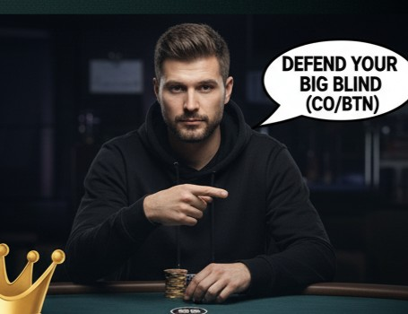

Poker Coaching: The Fundamentals (NLH)
This comprehensive course transitions you from a hopeful player to a disciplined, profitable winner in small stakes No-Limit Hold'em by mastering math, GTO strategy, and the mental game. NLH is about maximizing value, minimizing mistakes, and capitalizing on the errors of opponents.
Module 1: Advanced Foundational Poker Math ➗
Profitability starts with understanding the numbers. We move beyond simple intuition to calculate profitability using equity, odds, and expected value. This module turns guesswork into a rigorous, long-term profitable system.
1.1 Hand Equity, Outs, and the 4 & 2 Rule
Equity is your fair share of the pot. An Out is any card that will improve your hand to be the likely winner. The 4 and 2 Rule is a quick mental shortcut to estimate your hand equity when on a draw. You multiply your outs by 4 after the flop (2 cards to come) and by 2 after the turn (1 card to come).
Example Outs Estimates (4 & 2 Rule):
- Flush Draw (9 outs): 9 × 4 ≈ 36% (Flop to River)
- Open-Ended Straight Draw (8 outs): 8 × 4 ≈ 32% (Flop to River)
- Gutshot Straight Draw (4 outs): 4 × 4 ≈ 16% (Flop to River)
- Combo Draw (Flush + OESD, 15 outs): 15 × 4 ≈ 60% (Flop to River)
1.2 Pot Odds and Required Equity (Clarified)
Pot Odds are the ratio of what you must call to the total size of the pot you are trying to win (including your call). This determines the minimum frequency (required equity) you must win to break even on the call. Understanding this is the single most important foundational math skill for any beginner.
For example: If you call $25 to win a total pot of $100, your required equity is $25 / $100 = 25%. If your hand has more than 25% equity, calling is profitable.
1.3 Implied Odds and Reverse Implied Odds
The most sophisticated players factor in money that is *not yet* in the pot (Implied Odds) or money they might *lose* later (Reverse Implied Odds). These considerations allow you to make calls with draws that are technically -EV based on pure pot odds alone.
- Implied Odds: When drawing, you have good implied odds if you believe your opponent will pay off a big bet when you hit your monster (e.g., hitting a flush with an opponent who never folds). This justifies calling even if pure pot odds are slightly negative. Seek deep-stacked opponents with wide calling ranges.
- Reverse Implied Odds: Occur when you make a thin call and hit a hand that is likely second-best (e.g., calling with $J7$ and hitting a $J$, only to lose a big pot to $AJ$ or $KJ$). These hands should be avoided because they cost more money when they hit than when they miss. This is why you must avoid playing hands like J9o or KTo from early position.
1.4 Introduction to Expected Value (EV)
Expected Value (EV) is the average profit or loss you expect to make from a decision if you repeat it an infinite number of times. Our entire goal is to maximize positive EV decisions. This concept allows us to make plays that *lose* sometimes, but are still profitable in the long run.
In simple terms, an action has a positive EV if the total amount of money you win over time (weighted by the probability of winning) exceeds the total amount of money you lose over time (weighted by the probability of losing).
Module 2: GTO Pre-Flop Strategy & Post-Flop Theory 📋
We are building a Tight, Aggressive (TAG) strategy by using GTO-based ranges. GTO (Game Theory Optimal) means you are playing a strategy that is unexploitable by any opponent, ensuring you are never the target of aggression.
2.1 Positional Play: Rationale and RFI Ranges
Never limp. The size of your Raise First In (RFI) should be consistent: 3x BB in early/mid position, and 2.5x BB in the Cut-Off (CO) or Button (BTN). Position is Power. You should play a much wider range of hands in late position (CO, BTN) because you get to act last on all post-flop streets, which is a massive information advantage.
| Position | Rationale | RFI Range Sample (Key Hands) |
|---|---|---|
| UTG (Under the Gun) | Act first post-flop. Must be extremely tight to compensate for position disadvantage. | Pairs: 99+ | Suited: AKs, AQs, KQs | Offsuit: AKo, AQo |
| MP (Middle Position) | Slightly more relaxed. Can add some mid-suited connectors as bluffs. | Pairs: 88+ | Suited: AJs+, KJs+, T9s | Offsuit: AJo, KQo |
| CO (Cut-Off) | The first 'stealing' position. Opens wide because only three players remain to act. | Pairs: 66+ | Suited: A2s+, Q9s+, 76s+ | Offsuit: KTo+ |
| BTN (Button) | Act last post-flop. The single most profitable position. Maximize volume here. | Pairs: 22+ | Suited: All Aces, Kxs+, all connectors | Offsuit: KTo+, QTo+ |
2.2 3-Betting Strategy (Value vs. Bluff)
A 3-Bet is re-raising an open raise. Your 3-betting range should be Polarized from the Blinds (SB/BB), meaning it contains your best hands (AA, KK, AK) and your best bluffs (hands with good equity that block your opponent's best hands, like A5s). A polarized range makes it difficult for your opponent to know if you're raising for value or a bluff.
- Value Hands (Top): AA, KK, QQ, AK. These are for maximum profit.
- Bluff Hands (Bottom): Suited A-X (A5s-A2s) and suited connectors (87s, 76s, 65s). These have great playability if called and block opponent's premium hands.
2.3 Cold Calling and Defending the Big Blind
Cold calling (simply calling a raise when you haven't put money in yet) is a leak if done too often, as it surrenders the initiative. You should primarily defend your Big Blind (BB) because of the excellent pot odds you are getting.
BB Defense: When facing a 3x BB open, you only need ~25% equity to call. You can defend an extremely wide range (up to 70% of hands!) against a late-position raise, favoring hands that realize equity well (suited hands, pairs, broadways). Never fold an entire suited hand range!
Module 3: Post-Flop Theory: Continuation Betting and Barrel Strategy 🔥
The flop is where the game truly begins. This module covers the key principles for navigating the post-flop streets, focusing on the powerful and oft-misused Continuation Bet (C-Bet).
3.1 The Continuation Bet (C-Bet)
A C-Bet is a bet made on the flop by the player who was the pre-flop aggressor. We C-Bet for two primary reasons: protection/value (with strong hands) and bluffing (with draws or weak hands that have little Showdown Value).
3.2 Bet Sizing: Polarized vs. Linear
Your bet size should communicate your hand strength and the structure of your range.
- Small Bet Sizing (33% Pot): Used on boards where both ranges connect equally well, or to bet a high-frequency, Linear Range (value hands *and* bluffs). This is your default.
- Large Bet Sizing (75% - 100% Pot): Used on boards that dramatically favor your range (e.g., a dry A-high board when you have all the AA/AK combinations). This communicates a Polarized Range—either a monster or a pure bluff.
3.3 Double and Triple Barreling
Barreling is betting again on the turn (double) or river (triple) after a C-Bet on the flop. Barrels are effective bluffs because they exploit an opponent's tendency to fold to repeated aggression.
- Turn Barrel (Double): Best used when a card changes the board texture favorably (e.g., a flush draw completes, or a high card gives you more top pairs). Use hands with high equity or good blockers for bluffs.
- River Barrel (Triple): This is your highest-risk, highest-reward move. Only use it as a bluff with hands that have zero showdown value (e.g., failed flush draw) but have excellent blockers. If you get called here, you lose the whole pot.
Module 4: BRM, Game Selection, and The Mental Game 🧠💰
Technical skill is useless without discipline. This module covers the financial and psychological frameworks for long-term survival. Bankroll Management (BRM) is the financial discipline that keeps you in the game during inevitable downswings.
4.1 Bankroll Rules: Cash Games vs. Tournaments (MTT)
Variance is higher in tournaments, requiring a deeper bankroll. A Buy-in (BI) is the max amount you bring to the table (usually 100 big blinds) or the cost of a tournament ticket.
| Format | Min Buy-in Requirement | Move Down Point |
|---|---|---|
| Cash Games (NLH) | 20 Buy-Ins (BI) | If bankroll drops below 15 BI |
| Multi-Table Tournaments (MTT) | 100 Buy-Ins (BI) | If bankroll drops below 75 BI |
The Iron Rule: If your bankroll requires you to move down, do it immediately without question. This is the difference between surviving a downswing and going broke. Never play outside your BRM rules.
4.2 Game Selection: Choosing Profitable Tables
Your skill only accounts for half your win rate; Game Selection accounts for the other half. The goal is to always play with worse players than yourself. This is known as "table selection" and is critical for maximizing hourly win-rate.
- Look for the Fish: Identify loose, passive players (VPIP > 30%) or those making fundamental errors (limping, calling too much, checking too often). These are your primary source of profit.
- Target Position: Position yourself immediately to the left of the weakest player to gain position on them most often.
- Table Leave Rule: If you lose a large pot to a bad player, stay. They will make more mistakes. If you lose a large pot to a good player who is crushing you, leave immediately.
4.3 The Mental Game and Tilt Control
Tilt is playing sub-optimally due to emotional distress (anger, frustration, fear). It is the single largest leak for winning players. Protecting your mental game is the key to consistency.
The 5 R's of Emotional Control:
- Recognize: Identify the physical and mental signs of tilt (rapid heart rate, shallow breathing, desire to "get back" losses).
- Refocus: Remind yourself of your pre-defined, optimal strategy (your charts and math rules).
- Respond: Take a short break (5 minutes). Get water, stretch, or step away from the screen.
- Review: Objectively analyze the hand that caused the tilt (Was it a bad play or bad luck?).
- Repeat: Commit to returning to your A-Game. If you can't, use your Stop-Loss Rule and end the session.
Course 101 Complete!
Continue to Course 102 Now!You now possess the foundational pillars of winning poker: rigorous math, disciplined strategy, and psychological control. Apply these principles consistently and track your results to ensure long-term profitability in No-Limit Hold'em.